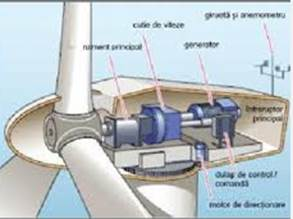
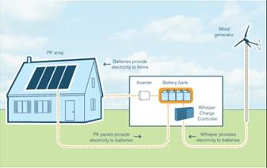

În contextul actual, caracterizat de creșterea alarmantă a poluării cauzate de producerea energiei din arderea combustibililor fosili, devine din ce în ce mai importantă reducerea dependenței de acești combustibili.
Energia eoliană s-a dovedit deja a fi o soluție foarte bună la problema energetică globală. Utilizarea resurselor regenerabile se adresează nu numai producerii de energie, dar prin modul particular de generare reformulează și modelul de dezvoltare, prin descentralizarea surselor. Energia eoliană în special este printre formele de energie regenerabilă care se pretează aplicațiilor la scară redusă.
- Principalul avantaj al energiei eoliene este emisia zero de substanțe poluante și gaze cu efect de seră, datorită faptului că nu se ard combustibili.
- Nu se produc deșeuri. Producerea de energie eoliană nu implică producerea nici unui fel de deșeuri.
- Costuri reduse pe unitate de energie produsă. Costul energiei electrice produse în centralele eoliene moderne a scăzut substanțial în ultimii ani, ajungând în S.U.A. să fie chiar mai mici decât în cazul energiei generate din combustibili, chiar dacă nu se iau în considerare externalitățile negative inerente utilizării combustibililor clasici.
- În 2004 prețul energiei eoliene ajunsese deja la o cincime față de cel din anii 1980, iar previziunile sunt de continuare a scăderii acestora deoarece se pun în funcțiuni tot mai multe unități eoliene cu putere instalată de mai mulți megawați.
- Costuri reduse de scoatere din funcțiune. Spre deosebire de centralele nucleare, de exemplu, unde costurile de scoatere din funcțiune pot fi de câteva ori mai mari decât costurile centralei, în cazul generatoarelor eoliene, costurile de scoatere din funcțiune, la capătul perioadei normale de funcționare, sunt minime, acestea putând fi integral reciclate.
Principalele dezavantaje sunt: resursa energetică relativ limitată, inconstanța datorată variației vitezei vântului și numărului redus de amplasamente posibile. Puține locuri pe Pământ oferă posibilitatea producerii a suficientă electricitate folosind energia vântului. La început, un important dezavantaj al producției de energie eoliană a fost prețul destul de mare de producere a energiei și fiabilitatea relativ redusă a turbinelor. În ultimii 25 de ani, eficacitatea energetică s-a dublat, costul unui kWh produs scăzând de la 0,70 euro la circa 0,32 euro în prezent.
Un alt dezavantaj este și "poluarea vizuală" - adică faptul că au o apariție neplăcută - iar altul ar fi faptul că produc "poluare sonoră" (sunt prea gălăgioase). De asemenea, se afirmă că turbinele afectează mediul și ecosistemele din împrejurimi, omorând păsări și necesitând terenuri mari virane pentru instalarea lor.
Argumente împotriva acestora sunt că turbinele moderne de vânt au o apariție atractivă stilizată, că mașinile omoară mai multe păsări pe an decât turbinele și că alte surse de energie, precum cărbunele, sunt cu mult mai dăunătoare pentru mediu, deoarece creează poluare și duc la efectul de seră. De asemenea, există un risc mare de distrugere în cazul furtunilor.